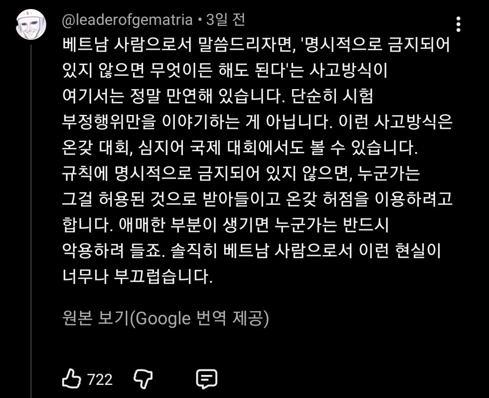

해외 게임 유튜버가 다뤘는데 당연하게도 베트남팀이 잘못했다는 의견안데 댓글에 아직도 베트남인들은 방플하면 안된다는 룰이 명시되지 않았다는둥 시간지연을 안한 사람이 잘못이라는둥 쉴드치는데 대댓글에서 개같이까임

그리고 베트남인의 양심고백
해외 게임 유튜버가 다뤘는데 당연하게도 베트남팀이 잘못했다는 의견안데 댓글에 아직도 베트남인들은 방플하면 안된다는 룰이 명시되지 않았다는둥 시간지연을 안한 사람이 잘못이라는둥 쉴드치는데 대댓글에서 개같이까임

그리고 베트남인의 양심고백
피씨방가면 카스핵 ㅈㄴ많았지 ㅋㅋ
그냥 다 핵이었음. 어렸을땐 돌아다니는 졸라맨이 뭔가했었음
디이2 맵핵도 많았음 ㅋㅋㅋㅋㅋ
초딩 때 피방에서 사장에게 맵핵 있어요? 물어 봤는데 그건 불법이라고 하심 ㅋㅋㅋㅋ 그때는 그게 불법인지 몰랐지만
ㄹㅇ 그땐 그냥 길찾기조까트니까 맵핵켜고겜하는게 다들그랬지 그게 불법인지뭔지도모르고 ㅋ
아니 명시되어 있다고 병신들아 ㅋㅋㅋㅋㅋㅋ
명시돼 있지 않았다고 가정하더라도 대횐데 상식적으로 방플하는 게 맞냐? 핵하고 다른게 뭔데? ㅋㅋㅋㅋ
공산권 특인가 중국도 저러잔어
법과 규칙보다 생존이 우선시 되는 후진국 특.
우리나라도 00년대까지는 저랬음 걍 나라가 못살고 시민의식 수준이 낮으면 저렇게 될수밖에 없음.
우리나라는 지금도 법으로 제한안하면 다 해도 되는줄 아는사람 많음. 도덕적 관념자체가 없음
명시되어있어도 안걸리면 그만이라고 생각할걸. 저번에 한국 식당에서 식재료 훔치다 걸려놓고선 뻔뻔하게 있던거보면 특히
베트남뿐만 아니라 동남아시아 전반 및 서남아시아 지역에서도 매우 유사하게 나타나는 문화적·사회적 특성 중 하나임. 인도나 서남아 지방에서는 대놓고 '주가드(Jugaad)'라는 개념이 있을 정도. "법이나 규칙에 딱 집어서 하지 말라고 안 했으면 괜찮다"는 식으로 상황을 유연하게 이용하는 경향이 있음.
중급닌자 필기시험 마인드 ㄷㄷ
짱>꺠들은 그래도 안했다고 우기다가 까밝히면 아닥이라도 하는데 똥트남은 당당하게 이게 왜 문제냐고 쉴드친다는거임, ㅋㅋㅋㅋㅋ
크래프톤 주가는 왜 박아놨어ㅋㅋㅋㅋ
아니 약관에는 동의를 했는데 그 약관을 잘지키겠다는 약관에는 동의를 한적이 없다니깐???????????
진짜 희대의 미개한 소리가 아닐 수 없다 "조항이 없다"
심지어 조항도 있다는거임
댓글보면 필사적으로 쉴드 치면서 크래프톤만의 잘못으로 몰아가더라 ㅋㅋㅋ
펍지가 개병신이긴 하지만 지들은 잘못 없다는 식으로 댓글 적는게 역겨워서 그냥 윤리의식 자체가 낮은 인종이구나 생각할라고..
저 댓글 보고 베트남인들은 한국인이 베트남인이라고 사칭하고 단거라고 김치나 먹으라고 조롱 중임 ㅋㅋㅋㅋ
아 근데
크래프톤한테는 모두 욕하드라 ㅋㅋㅋㅋㅋ
알고리즘에 어제 떠서 전부 들어봤는데 당연하게 베트남팀이 잘못했다는 뉘앙스보다 크래프톤이 잘못했다는 뉘앙스가 주임
수피 좌표찍고 사이버불리잉한 내용도 없고 중립지킨답시고 베트남 프로들 성명도 한국팀, 수피의 의견과 대등하게 노출하고
그들이 스트림스나이핑 한 것에 대한 비판 없고 그냥 사실만 나열해놓음. 그래놓고 베트남의 수피가 에임핵 쓰고있다고 주장하는 의견까지 노출하고.
전영상들도보면 그냥 인터넷상 논란으로 돈벌어먹고사는 해외판 사이버렉카임.
희안하리만치 한국컨텐츠가 많고
아니 방플 조항에는 동의를 했는데 그 조항을 잘지키겠다는 거에는 동의를 한적이없다니깐
19세기 영국이 저따위였는데. 영국신사라는 말이 지들 잰틀해서 나온게 아니지.
근데 저런 마인드 개드립에도 많던데 대표적으로 흡연충이 있음
가톨릭에서도 사도 바울이 이런 말을 함. "율법이 없었다면 나는 죄를 몰랐을 것이다. 율법이 탐내지 말라고 하지 않았다면, 나는 탐욕을 모르고 살았을 것이다" 라고. 사실 금지는 그런거야. 처음엔 그게 뭔지도 모르고 있다가, 법이나 신이나 뭐든 "하지 말라"고 선을 긋는 순간 생겨나는 거지.
어? 이거 완전 F1
공산주의 국가들의 특징임
펙트는 규칙에 적혀있는데
없다고 우기고있을 뿐이라는거임
우리나라도 90년대초까지는 저런 마인드였음 ㅋㅋㅋㅋㅋ
양심냉장고 이후에 완전히 바뀌었지